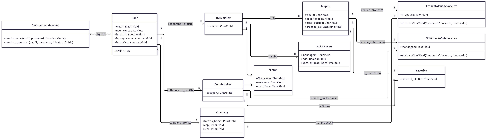
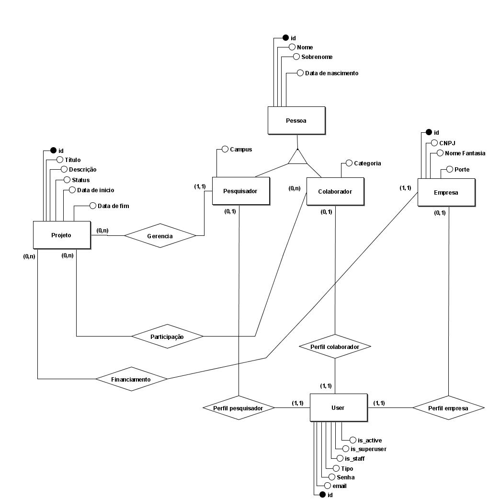

Documento de Arquitetura
Histórico de Versão
| Data | Versão | Descrição | Autor(es) |
|---|---|---|---|
| 1/11/2025 | 1.0 | Criação do documento de arquitetura | Pedro Vargas, Thiago Gomes |
1 Introdução
1.1 Finalidade
Este documento tem como finalidade descrever a arquitetura de software do projeto Vitra, uma aplicação movél. A arquitetura descrita aqui serve serve como referência para orientar a equipe ao longo do projeto, servindo também como referência para os interessados.
1.2 Escopo
O Vitra é um aplicativo mobile desenvolvido por estudantes da Universidade de Brasília (UnB), com o objetivo de servir como uma vitrine de projetos voltada para pesquisadores, colaboradores e empresas. Este documento descreve os aspectos técnicos essenciais da arquitetura do sistema, abrangendo tanto o Frontend quanto o Microsserviço API.
2 Representação da Arquitetura
2.1 Padrão Arquitetural
A arquitetura do Vitra adota uma abordagem baseada em microsserviços, composta por dois principais componentes independentes:
- Frontend: Responsável pela interface e experiência do usuário no aplicativo móvel.
- Microsserviço API: Responsável pela camada de backend e pela disponibilização dos serviços da aplicação.
2.2 Diagrama de relacionamento
 Diagrama elaborado por Pedro Vargas, 2025
Diagrama elaborado por Pedro Vargas, 2025
2.3 Frontend
O Frontend, desenvolvido em React Native, atua como cliente da API REST. Ele representa a camada View da arquitetura global, sendo responsável por consumir os serviços oferecidos pelo backend e apresentar as informações de forma interativa ao usuário final.
2.4 Microsserviço API
No Microsserviço API, foi adotado o padrão arquitetural MVC (Model-View-Controller), implementado por meio do Django REST Framework. Nesse modelo, as responsabilidades são bem definidas e desacopladas:
- Model: Representa a camada de dados e as regras de negócio, sendo responsável pela comunicação com o banco de dados PostgreSQL, que centraliza e persiste todas as informações da aplicação.
- View: Corresponde às views do Django REST Framework, que expõem os dados e funcionalidades do sistema através de endpoints da API REST.
- Controller: É representado pelos serializers e viewsets, que processam as requisições, aplicam regras de validação e intermediam a comunicação entre as views e os models.
Dessa forma, a comunicação entre o microsserviço e o frontend ocorre por meio de requisições HTTP, garantindo um baixo acoplamento entre as partes e facilitando a escalabilidade, manutenção e evolução independente de cada componente.
3 Metas e restrições arquiteturais
3.1 Metas arquiteturais
-
Acessibilidade: O sistema deve ser acessível nas plataformas móveis (IOS e Android) através de um aplicativo nativo.
-
Manutenibilidade: A arquitetura deve ajudar em fazer com que correções de bugs e implementação de novas features. A separação entre o Frontend(View) e API (Controller/Model) é a principal forma para atingir essa meta.
-
Testabilidade: Facilitar a implementação de testes unitários e automatizados de forma isolada para o frontend e backend.
-
Segurança: Garantir requisitos de segurança para a autenticação de usuários e autoriazação baseada nos diferentes perfis.
3.2 Requisitos Arquiteturais
| Restrição | Ferramenta |
|---|---|
| Frontend (Linguagem) | TypeScript |
| Frontend (Framework) | React Native e Expo |
| Backend (Linguagem) | Python |
| Backend (Framework) | Django e Django Rest( para API) |
| Banco de Dados | PostgreSQL |
| Plataforma | Mobile |
| Segurança | Cada usuário contará com uma conta autenticada via token (django-authtoken), visto que o aplicativo dará suporte para criação de cadastros personalizados. |
4 Backlog do produto
Funcionamento: O aplicativo Vitra tem como objetivo fornecer maior acessibilidade e melhor visualização e navegação para pesquisas acadêmicas que estão em curso na Universidade de Brasília (UNB). Para isso, o sistema permite que os usuários se cadastrem e escolham entre três tipos de perfil (Pesquisador, Colaborador ou Empresa) ou ainda apenas o modo de visualização, definindo assim a experiência inicial dentro do aplicativo. Após realizar o login, o usuário pode visualizar informações sobre pesquisas, criar ou apoiar pesquisas e entrar em contato com pesquisadores, dependendo de sua função.
Influência na Arquitetura: A arquitetura escolhida foi a Microsserviço API, principalmente por permitir uma melhor organização entre múltiplos papéis com permissões distintas. Por exemplo, apenas "Empresas" podem fazer propostas financeiras e apenas "Pesquisadores" podem criar projetos. A escolha de uma arquitetura com uma API desacoplada (Microsserviço API) foi a solução direta para esse requisito. Ela permite centralizar 100% da lógica de autorização e permissão no backend (Camada Controller), expondo ao Frontend (Camada View) apenas os dados e ações permitidos para aquele usuário específico, garantindo a segurança e a integridade das regras de negócio.
Entre os fatores que influenciaram a escolha do padrão de arquitetura, destacam-se:
-
Suporte a dispositivos móveis (Android e iOS), viabilizado pelo uso do React Native;
-
Necessidade de autenticação e controle centralizado de usuários;
-
Facilidade na manutenção e expansão do sistema;
-
Definição clara das responsabilidades entre os componentes.
5 Implementação
5.1 Visão lógica
5.1.1 Visão geral:
- Camada de Interface: Responsável pela interação com o usuário, desenvolvida em React Native
- Camada de API: Conjunto de endpoints REST disponibilizados pelo backend para comunicação com o aplicativo
- Camada de Serviços: Onde estão as regras de negócio e o tratamento das informações
- Camada de Banco de Dados: Encapsula a persistência e a manipulação dos dados no banco de dados
5.1.2 Componentes Principais
Frontend (ReactNative com TypeScript)
O frontend do Vitra foi construído utilizando React Native em conjunto com TypeScript, permitindo a criação de telas no aplicativo com tipagem estática. Essa combinação garante a identificação de erros durante a compilação, melhora a legibilidade e documentação do código, além de oferecer suporte à autocompletação no ambiente de desenvolvimento. A arquitetura é organizada de maneira modular, facilitando tanto a evolução quanto a manutenção do projeto.
Estrutura de Diretórios:
- Mobile: Diretório raiz do projeto Frontend em React Native (gerenciado com Expo)
- app: Contém as telas e rotas principais da aplicação
- assets/Images: Armazena as imagens e outros arquivos de mídia utilizados na interface
- components: Contém os componentes reutilizáveis da interface, como botões, campos de texto e menus
- utils: Reúne funções utilitárias, como formatações e validações usadas em várias partes do app
- app.json: Arquivo de configuração do Expo, definindo nome, ícone, splash screen e permissões do aplicativo
- eslint.config.js: Define as regras de linting e padronização do código
- package-lock.json: Registra as versões exatas das dependências instaladas para garantir consistência
- package.json: Define as dependências, scripts e metadados do projeto
- tsconfig.json: Configuração do TypeScript, especificando as opções de compilação e checagem de tipos
Backend (Django Rest Framework)
O backend do Vitra é desenvolvido com o Django Rest Framework e adota uma arquitetura modular, que prioriza a separação clara de responsabilidades. Sua estrutura é composta por módulos principais e segue um padrão organizado de diretórios.
Estrutura de Diretórios:
- API: Diretório raiz do projeto Django
- api: Aplicativo Django responsável pela lógica de API
- core: Configurações centrais do projeto Django
- django.sh: Arquivos para auxílio na instalação ou inicialização do software (Script customizado).
- docker-compose.yml: Arquivo com arquivos do Docker para orquestração de serviços.
- Dockerfile: Arquivo de configuração Docker para construir a imagem da aplicação.
- manage.py: Arquivo criado automaticamente para gerenciamento de comandos (execução de servidor, migrações, etc.).
- requirements.txt: Organiza todos os pacotes/componentes que a aplicação utiliza.
Diagrama de classes

Modelo elaborado por Pedro Vargas, 20255.2 Visão de dados (MER)
O Modelo Entidade-Relacionameto (MER) foi feito para ajudar a orientar o grupo a modelar e desenolver o banco de dados. Ele define as entidades, seus atributos e os relacionamentos entre elas, garantindo a integridade e a consistência de nosso banco de dados.

Modelo elaborado por Pedro Vargas, 20255.3 Visão de implementação
O software será implantado em ambiente de desenvolvimento local (localhost), com a devida configuração da infraestrutura de software e dos parâmetros necessários para sua execução.
5.3.1 Descrição da Infraestrutura de Implantação
-
Cliente (Frontend): A aplicação será desenvolvida em React Native. Ela poderá ser executada tanto em emuladores de dispositivos móveis (como Android Studio e iOS Simulator) quanto em dispositivos físicos, por meio do aplicativo Expo Go.
-
Servidor (Backend): A tecnologia do servidor será desenvolvida utilizando o framework de alto nível Django.
-
Comunicação: Iremos utilizar a biblioteca Axios para fazer as requisições HTTP.
-
Armazenamento de dados: O sistema utiliza PostgreSQL para armazenamento de dados.
-
Repositório:: O código-fonte de todos os componentes (front-end e back-end) é gerenciado por meio de três repositórios: o de documentação (2025.2-Fuxi-Docs), o de front-end (2025.2-Fuxi-Mobile) e o de back-end (2025.2-Fuxi-API).
5.3.2 Tecnologias de Implantação
-
Imprelentação Local: Por se tratar de um projeto de pequeno porte, não houve necessidade de utilizar uma hospedagem mais complexa, o que também evitou custos adicionais com esse tipo de serviço.
-
Docker: Garante que todos usem o mesmo banco de dados PostgreSQL e os mesmos serviços de back-end.
-
PostgreSQL: Foi escolhido por ser mais fácil de implementar com o Django.
-
React Native: Foi escolhido por ser uma opção que facilita a codificação para dispositivos móveis.
-
Django REST Framework: Framework backend robusto e seguro. Sua arquitetura acelera a construção de APIs RESTful complexas, como necessitamos dados os mútltiplos perfis existentes.